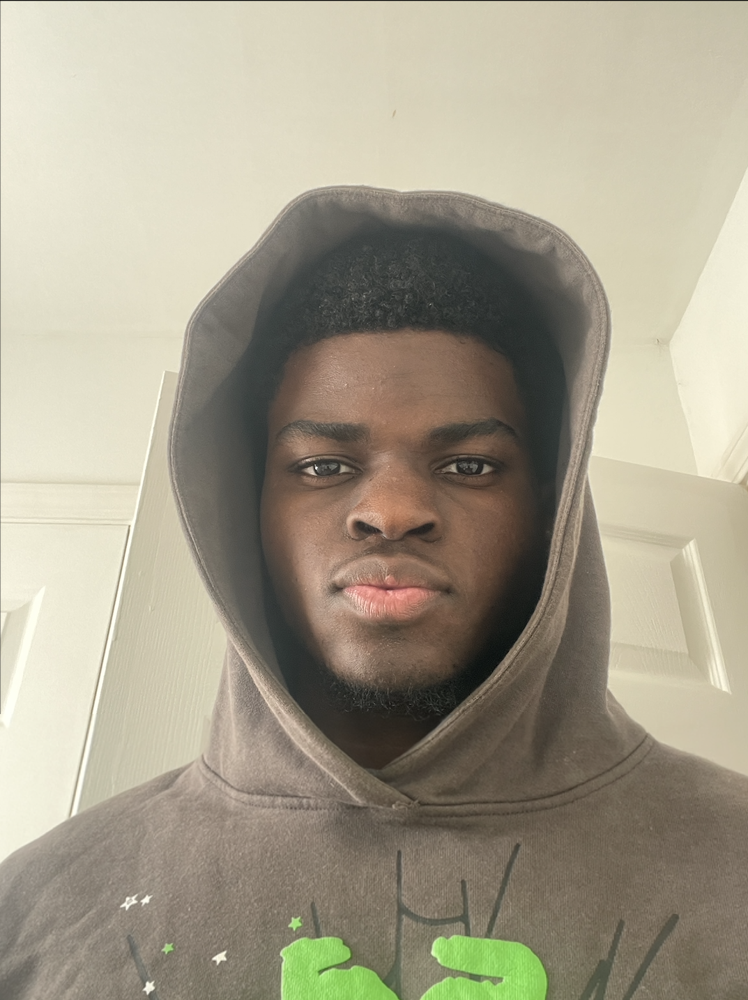

Introduction

- Personal Background: I’m 20 years old and enjoy spending my free time working out, swimming, reading, and taking care of animals.
- Professional Background: I have completed two internships for IT.
- Academic Background: I’m a rising senior at UNC Charlotte studying computer science with a focus in Information Technology. I transferred to UNC Charlotte from CPCC and attended North Mecklenburg High School.
- Background in this Subject: I have worked on a few projects building web applications throughout my university career.
- Primary Work Computer: The laptop I use for schoolwork is a MacBook Pro.
- Backup Work Computer & Location Plan: I will go to Atkins Library and get a loaner laptop or use an open desktop.
-
Courses I’m Taking, & Why:
- ITIS-3135 - Front-End Web Application Development: Required course.
- ITIS-3200 - Intro to Info & Security Privacy: Required course.
- ITIS-3160 - Database Design and Implementation: Required course.
- Funny/Interesting Item to Remember Me By: When I worked as a lifeguard, I once had to dive 12 feet deep at the end of my shift because a child left goggles at the bottom of the pool. Afterwards, the child referred to me as “Mr. Goggles” every time we saw each other.
- I’d Also Like to Share: I am a polyglot.